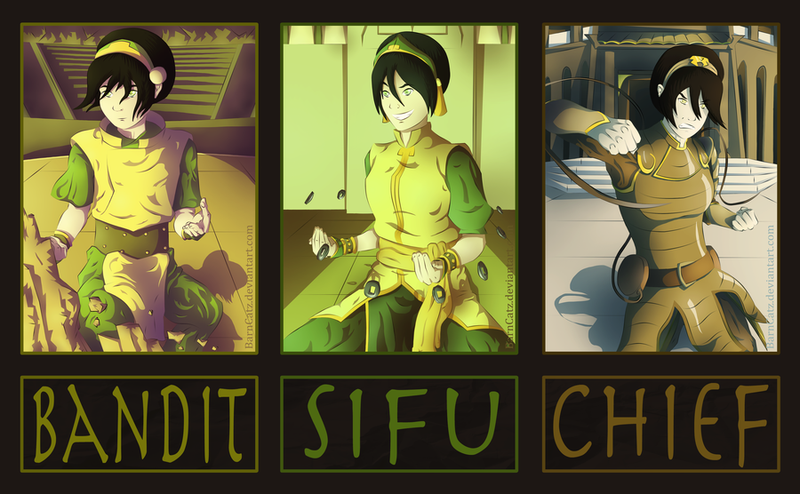

Toph Beifong is an earthbending master, one of the most powerful of her time, and the discoverer of metalbending. Blind since birth, Toph was constantly treated condescendingly because of her visual impairment, particularly by her overprotective parents, Lao and Poppy Beifong. Upon discovering badgermoles, earthbending animals who are also blind, she learned how to use earthbending as an extension of her senses. This gave her the ability to "see" every vibration that passes through the ground.
Having developed her own unique style of earthbending, Toph acquired a toughened personality and became famous for winning underground earthbending tournaments under the name "The Blind Bandit", doing so behind her parents' backs. Although initially uninterested in directly aiding the war effort, she eventually chose to leave behind her old life, and travel with Avatar Aang and his friends as his earthbending teacher, when her parents finally became unbearable for her. Toph's total mastery over earthbending, unique personality, and thoughtful pragmatism made her a valuable addition to the team.
After Republic City's formation, Toph became the city's first Chief of Police, forming the Metalbending Police Force to help maintain order. She had two daughters with two different men: Lin, who succeeded her as Chief of Police, and Suyin, who created the metal city of Zaofu. Toph eventually set out to roam the world in search of enlightenment before settling down in the Foggy Swamp.